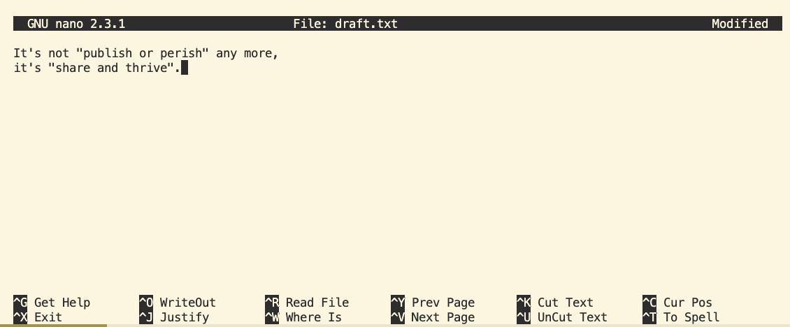

Introducing the Shell
Learning Objectives
- Describe key reasons for learning shell.
- Navigate your file system using the Bash command line.
- Access and read help files for
bashprograms and use help files to identify useful command options. - Demonstrate the use of tab completion, and explain its advantages.
- Translate an absolute path into a relative path and vice versa.
- Learn to use the
nanotext editor. - Understand how to move, create, and delete files.
- Write a basic shell script.
- Use the
bashcommand to execute a shell script. - Use
chmodto make a script an executable program.
Questions to be answered in this lesson
- What is a command shell and why would I use one?
- How can I move around on my computers file system?
- How can I see what files and directories I have?
- How can I specify the location of a file or directory on my computer?
What is a shell?
A shell is a program that provides a command-line interface (CLI), allowing you to control your computer by typing commands instead of using graphical user interfaces (GUIs) with a mouse or touchscreen. Think of it as conversing directly with your computer in its native language, granting you more power and flexibility—no point-and-click needed!
There are various types of shells, each with its own flair. On macOS and Linux systems, you’ll often encounter Bash (Bourne Again Shell) and Zsh (Z Shell). For Windows users, there’s the Command Prompt and PowerShell, which is like Command Prompt’s more sophisticated sibling. Mastering the shell can help you work more efficiently, automate tasks, and unlock your computer’s full potential!
For this workshop, we will be using Bash in a Ubuntu virtual machine specifically set up for this class. The commands we explore will also work in zsh (available in the Mac Terminal) with minimal adjustments. While PowerShell (the Windows shell) has a different syntax, many of the fundamental commands and concepts are similar and can be adapted with little or no modification.
Why should I learn the Shell?
There are many reasons that may benefit you from learning about about the shell:
Automate repetitive tasks. If you often need to repeat tasks with a large number of files, with the shell, you can automate those.
Make your work less error-prone. The shell makes your work less error-prone. When humans do the same thing a hundred different times (or even ten times), they’re likely to make a mistake. Your computer can do the same thing a thousand times with no mistakes.
Make your work reproductible. When using the command-line your computer keeps a record of every command that you’ve run, which you can use to re-do your work when you need to. It also gives you a way to communicate unambiguously what you’ve done, so that others can inspect or apply your process to new data.
Save on computing capacity. Sometimes, when we work with data some tasks may require large amounts of computing power and can’t realistically be run on your own machine. These tasks are best performed using remote computers or cloud computing, which can only be accessed through a shell.
Get advantage of the command line tools. Many bioinformatics tools can only be used through the shell. Many offer features and parameter options which are not available in the GUI. BLAST is an example. Many of the advanced functions are only accessible to users who know how to use a shell.
The Shell Window
As you open your Terminal Window, you may see something like the following:
ComputerUserName-####ABC MINGW64 ~
$The dollar sign is a prompt, which shows us that the shell is waiting for input; your shell may use a different character as a prompt and may add information before the prompt. When typing commands, either from these lessons or from other sources, do not type the prompt, only the commands that follow it.
This symbol may be different if you are using a Linux or Mac computer.
Mastering Absolute vs. Relative Paths with the cd Command
Navigating the file system efficiently is crucial for managing files and directories. The cd (change directory) command is a fundamental tool that allows you to move between directories using absolute and relative paths. Mastering these path types will enhance your command-line proficiency.
Understanding Path Types
Absolute Path
- Definition: An absolute path specifies the complete address of a directory from the root of the file system.
- Starts With: A forward slash
/. - Example:
/home/user/shell_data/untrimmed_fastq
Relative Path
- Definition: A relative path specifies the location of a directory relative to your current directory.
- Does Not Start With: A forward slash
/. - Example:
untrimmed_fastq(if you are already in/home/user/shell_data)
Directory Hierarchy Overview
Visualizing the directory structure helps in understanding absolute and relative paths.
/
├── home
│ └── user
│ ├── shell_data
│ │ └── sra_metadata
│ │ └── untrimmed_fastq
│ └── Documents
└── etc- Root Directory (
/): The top-level directory. - Subdirectories: Branch out from the root or other directories.
Using the cd Command
Navigate to the home directory, then enter the pwd command.
Command:
$ cd
$ pwd Output: Note: This is an example
$ /usr/home/⟨username⟩Here pwd displays the full name of your home directory. The very top of the hierarchy is a directory called / which is usually referred to as the root directory.
Now lets navigate directly to the .hidden folder using the full path.
$ cd /usr/home/⟨username⟩/shell_data/.hiddenThis jumps forward multiple levels to the .hidden directory. Now go back to the home directory.
$ cd You can also navigate to the .hidden directory using a relative path (relative to our working directory):
$ cd shell_data/.hiddenBoth commands navigate to the .hidden directory, but one uses an absolute path from the home directory (~/shell_data/.hidden), while the other employs a relative path from the current working directory (.hidden). Absolute paths always begin with a / or ~, providing the complete address regardless of your location. In contrast, relative paths are shorter and depend on your current directory, making them quicker to type when navigating nearby folders.
Think of a relative path as receiving local directions, effective when you’re already nearby, whereas an absolute path is like GPS coordinates that work from anywhere. Depending on where you are in the directory hierarchy, you can choose the most convenient path type: use absolute paths when starting from the home directory and relative paths when working within a specific folder. As you become more familiar with your directory structure, navigating between directories using both path types will become easier and more intuitive.
Summary
- Absolute Paths provide the full directory address from the root (or home directory using
~), ensuring you can navigate to any directory from anywhere. - Relative Paths are based on your current location, allowing quicker navigation within nearby directories.
- Mastering both path types with the
cdcommand enhances your ability to efficiently manage and navigate the file system. - The commands
cd, andcd ~are very useful for quickly navigating back to your home directory.
By practicing these commands and understanding when to use each path type, you’ll become proficient in navigating and managing directories in any operating system.
Writing and Reading Files
Now that we know how to move around and look at things, let’s learn how to read, write, and handle files! We’ll start by moving back to our home directory and creating a scratch directory:
$ cd ~
$ mkdir shell_test
$ cd shell_testCreating and Editing Text Files
When working in a shell, we will frequently need to create or edit text files. Text is one of the simplest computer file formats, defined as a simple sequence of text lines.
What if we want to make a file? There are a few ways of doing this, the easiest of which is simply using a text editor. For this lesson, we are going to us nano, since it’s more intuitive than many other terminal text editors.
To create or edit a file, type nano <filename>, on the terminal, where <filename> is the name of the file. If the file does not already exist, it will be created. Let’s make a new file now, type whatever you want in it, and save it.
$ nano draft.txt
Nano defines a number of shortcut keys (prefixed by the Control or Ctrl key) to perform actions such as saving the file or exiting the editor. Here are the shortcut keys for a few common actions:
Ctrl+O — save the file (into a current name or a new name).
Ctrl+X — exit the editor. If you have not saved your file upon exiting,
nanowill ask you if you want to save.Ctrl+K — cut (“kill”) a text line. This command deletes a line and saves it on a clipboard. If repeated multiple times without any interruption (key typing or cursor movement), it will cut a chunk of text lines.
Ctrl+U — paste the cut text line (or lines). This command can be repeated to paste the same text elsewhere.
Examining Files
Next, let’s explore how to view the contents of files.
One way to examine a file is by using the cat command, which prints the entire contents of the file to the terminal.
Enter the following command from within the untrimmed_fastq directory:
$ cat SRR098026.fastqThis will print out all of the contents of the SRR098026.fastq to the screen.
Try it Yourself!
Print out the contents of the
~/shell_data/untrimmed_fastq/SRR097977.fastqfile. What is the last line of the file?From your home directory, and without changing directories, use one short command to print the contents of all of the files in the
~/shell_data/untrimmed_fastqdirectory.
- The last line of the file is
C:CCC::CCCCCCCC<8?6A:C28C<608'&&&,'$. cat Desktop/unix_lesson/shell_data/untrimmed_fastq/*
While cat is a fantastic tool for displaying the contents of a file, it can become cumbersome when dealing with very large files. In such cases, the less command is more efficient and user-friendly. less opens the file in read-only mode and allows you to navigate through its contents interactively.
Enter the following command:
$ less SRR097977.fastqSome navigation commands in less:
| key | action |
|---|---|
| Space | to go forward |
| b | to go backward |
| g | to go to the beginning |
| G | to go to the end |
| q | to quit |
less also gives you a way of searching through files. Use the “/” key to begin a search. Enter the word you would like to search for and press enter. The screen will jump to the next location where that word is found.
Shortcut:
If you hit “/” then “enter”, less will repeat the previous search. less searches from the current location and works its way forward. Scroll up a couple lines on your terminal to verify you are at the beginning of the file. Note, if you are at the end of the file and search for the sequence “CAA”, less will not find it. You either need to go to the beginning of the file (by typing g) and search again using / or you can use ? to search backwards in the same way you used / previously.
For instance, let’s search forward for the sequence TTTTT in our file. You can see that we go right to that sequence, what it looks like, and where it is in the file. If you continue to type / and hit return, you will move forward to the next instance of this sequence motif. If you instead type ? and hit return, you will search backwards and move up the file to previous examples of this motif.
Try it Yourself!
What are the next three nucleotides (characters) after the first instance of the sequence quoted above?
CAC
Remember, the man program actually uses less internally and therefore uses the same commands, so you can search documentation using “/” as well!
Viewing Parts of Files with head and tail
Another method to inspect files is to view only a portion of their contents, which is especially useful when you want to see the beginning or the end of a file or examine its formatting without loading the entire file. The head and tail commands facilitate this by allowing you to display the first few lines or the last few lines of a file, respectively. These commands are invaluable for quickly assessing large files, checking recent entries in log files, or verifying the structure of a document without the need to scroll through the entire content.
Command:
$ head SRR098026.fastqOutput:
@SRR098026.1 HWUSI-EAS1599_1:2:1:0:968 length=35
NNNNNNNNNNNNNNNNCNNNNNNNNNNNNNNNNNN
+SRR098026.1 HWUSI-EAS1599_1:2:1:0:968 length=35
!!!!!!!!!!!!!!!!#!!!!!!!!!!!!!!!!!!
@SRR098026.2 HWUSI-EAS1599_1:2:1:0:312 length=35
NNNNNNNNNNNNNNNNANNNNNNNNNNNNNNNNNN
+SRR098026.2 HWUSI-EAS1599_1:2:1:0:312 length=35
!!!!!!!!!!!!!!!!#!!!!!!!!!!!!!!!!!!
@SRR098026.3 HWUSI-EAS1599_1:2:1:0:570 length=35
NNNNNNNNNNNNNNNNANNNNNNNNNNNNNNNNNNCommand:
$ tail SRR098026.fastqOutput:
+SRR098026.247 HWUSI-EAS1599_1:2:1:2:1311 length=35
#!##!#################!!!!!!!######
@SRR098026.248 HWUSI-EAS1599_1:2:1:2:118 length=35
GNTGNGGTCATCATACGCGCCCNNNNNNNGGCATG
+SRR098026.248 HWUSI-EAS1599_1:2:1:2:118 length=35
B!;?!A=5922:##########!!!!!!!######
@SRR098026.249 HWUSI-EAS1599_1:2:1:2:1057 length=35
CNCTNTATGCGTACGGCAGTGANNNNNNNGGAGAT
+SRR098026.249 HWUSI-EAS1599_1:2:1:2:1057 length=35
A!@B!BBB@ABAB#########!!!!!!!######The -n option to either of these commands can be used to print the first or last n lines of a file.
Command:
$ head -n 1 SRR098026.fastqOutput:
@SRR098026.1 HWUSI-EAS1599_1:2:1:0:968 length=35Command:
$ tail -n 1 SRR098026.fastqOutput:
A!@B!BBB@ABAB#########!!!!!!!######Summary
In this section, you learned how to view the contents of files using several Bash commands. You can display the entire file with cat, navigate through large files interactively with less, view the beginning of a file using head, and examine the end of a file with tail. These tools offer flexible options for accessing and inspecting file data efficiently.
Creating, moving, copying, and removing
Now we can move around in the file structure, look at files, and search files. But what if we want to copy files or move them around or get rid of them? Most of the time, you can do these sorts of file manipulations without the command line, but there will be some cases (like when you’re working with a remote computer) where it will be impossible. You’ll also find that you may be working with hundreds of files and want to do similar manipulations to all of those files. In cases like this, it’s much faster to do these operations at the command line.
Copying Files
While navigating the file structure, viewing files, and searching through them are essential tasks, there are times when you need to create, move, copy, or delete files. Although many of these file manipulations can be performed using graphical interfaces, there are scenarios—such as working on a remote computer or handling large batches of files—where the command line becomes indispensable. When dealing with hundreds of files that require similar operations, executing these tasks via the command line is significantly faster and more efficient.
First, let’s make a copy of one of our FASTQ files using the cp command.
Navigate to the shell_data/untrimmed_fastq directory and enter:
$ cp SRR098026.fastq SRR098026-copy.fastq
$ lsSRR097977.fastq SRR098026-copy.fastq SRR098026.fastqWe now have two copies of the SRR098026.fastq file, one of them named SRR098026-copy.fastq. We’ll move this file to a new directory called backup where we’ll store our backup data files.
Creating Directories
The mkdir command is used to make a directory. Enter mkdir followed by a space, then the directory name you want to create:
$ mkdir backupMoving / Renaming
We can now move our backup file to this directory. We can move files around using the command mv:
$ mv SRR098026-copy.fastq backup
$ ls backupSRR098026-copy.fastqThe mv command is also how you rename files. Let’s rename this file to make it clear that this is a backup:
$ cd backup
$ mv SRR098026-copy.fastq SRR098026-backup.fastq
$ lsSRR098026-backup.fastqFile Permissions
We’ve now made a backup copy of our file, but just because we have two copies, it doesn’t make us safe. We can still accidentally delete or overwrite both copies. To make sure we can’t accidentally mess up this backup file, we’re going to change the permissions on the file so that we’re only allowed to read (i.e. view) the file, not write to it (i.e. make new changes).
View the current permissions on a file using the -l (long) flag for the ls command:
$ ls -l-rw-r--r-- 1 <username> 43332 <last modified date time> SRR098026-backup.fastqThe first part of the output for the -l flag gives you information about the file’s current permissions. There are ten slots in the permissions list. The first character in this list is related to file type, not permissions, so we’ll ignore it for now. The next three characters relate to the permissions that the file owner has, the next three relate to the permissions for group members, and the final three characters specify what other users outside of your group can do with the file. We’re going to concentrate on the three positions that deal with your permissions (as the file owner).

Here the three positions that relate to the file owner are rw-. The r means that you have permission to read the file, the w indicates that you have permission to write to (i.e. make changes to) the file, and the third position is a -, indicating that you don’t have permission to carry out the ability encoded by that space (this is the space where x or executable ability is stored. This controls your ability to run files that are programs or cd into a directory).
Our goal for now is to change permissions on this file so that you no longer have w or write permissions. We can do this using the chmod (change mode) command and subtracting (-) the write permission -w.
$ chmod -w SRR098026-backup.fastq
$ ls -l -r--r--r-- 1 <username> 43332 <last modified date time> SRR098026-backup.fastqRemoving
To prove to ourselves that you no longer have the ability to modify this file, try deleting it with the rm command:
$ rm SRR098026-backup.fastqYou’ll be asked if you want to override your file permissions:
rm: remove write-protected regular file ‘SRR098026-backup.fastq'? You should enter n for no. If you enter n (for no), the file will not be deleted. If you enter y, you will delete the file. This gives us an extra measure of security, as there is one more step between us and deleting our data files.
Important: The rm command permanently removes the file. Be careful with this command. It doesn’t just nicely put the files in the Trash. They’re really gone.
By default, rm will not delete directories. You can tell rm to delete a directory using the -r (recursive) option. Let’s delete the backup directory we just made.
Enter the following command:
$ cd ..
$ rm -r backupThis will delete not only the directory, but all files within the directory. If you have write-protected files in the directory, you will be asked whether you want to override your permission settings.
Starting in the shell_data/untrimmed_fastq/ directory, do the following:
- Make sure that you have deleted your backup directory and all files it contains.
- Create a backup of each of your FASTQ files using
cp. (Note: You’ll need to do this individually for each of the two FASTQ files. We haven’t learned yet how to do this with a wildcard.) - Use a wildcard to move all of your backup files to a new backup directory.
- Change the permissions on all of your backup files to be write-protected.
Summary
In this section, you learned essential commands for managing your file system efficiently. The cp, mv, and mkdir commands allow you to copy and move existing files as well as create new directories, enabling effective organization and manipulation of your files. Additionally, you can view file permissions using ls -l, which provides detailed information about each file’s access rights, and modify these permissions with chmod to control who can read, write, or execute your files.
Downloading and Extracting Files
When you’re working in the shell, especially on remote computers, its not possible to access a web browser to download files from the internet. Fortunately there are commands we can use to do just this! Also since bioinformatics files tend to be huge we typically have to compress them so they travel faster over the internet. This means we also need tools to extract the compressed files. Lets check out these tools.
Let’s grab and unpack a set of demo files for use later. To do this, we’ll use wget (wget link downloads a file from a link).
$ cd
$ cd shell_data
$ wget http://www.hpc-carpentry.org/hpc-shell/files/bash-lesson.tar.gz
$ lsYou’ll commonly encounter .tar.gz archives while working in UNIX. To extract the files from a .tar.gz file, we run the command tar -xvf filename.tar.gz:
$ tar -xvf bash-lesson.tar.gzdmel-all-r6.19.gtf
dmel_unique_protein_isoforms_fb_2016_01.tsv
gene_association.fb
SRR307023_1.fastq
SRR307023_2.fastq
SRR307024_1.fastq
SRR307024_2.fastq
SRR307025_1.fastq
SRR307025_2.fastq
SRR307026_1.fastq
SRR307026_2.fastq
SRR307027_1.fastq
SRR307027_2.fastq
SRR307028_1.fastq
SRR307028_2.fastq
SRR307029_1.fastq
SRR307029_2.fastq
SRR307030_1.fastq
SRR307030_2.fastqWe just unzipped a .tar.gz file for this example. What if we run into other file formats that we need to unzip? Just use the handy reference below:
gunzipextracts the contents of .gz filesunzipextracts the contents of .zip filestar -xvfextracts the contents of .tar.gz and .tar.bz2 files
Summary
In this section we explored how to download files from the internet using the wget command and extract compressed .tar.gz archives with the tar command. By navigating to the appropriate directory, downloading the necessary demo files, and unpacking them, you can efficiently manage and access large datasets. These command-line tools are essential for handling file transfers and extractions, especially when working in environments where graphical interfaces are unavailable or when dealing with extensive data sets in UNIX-based systems.
Wildcards and Pipes
Now that we know some of the basic UNIX commands, we are going to explore some more advanced features. The first of these features is the wildcard *. In our examples before, we’ve done things to files one at a time and otherwise had to specify things explicitly. The * character lets us speed things up and do things across multiple files.
Ever wanted to move, delete, or just do “something” to all files of a certain type in a directory? * lets you do that, by taking the place of one or more characters in a piece of text. So *.txt would be equivalent to all .txt files in a directory for instance. * by itself means all files. Let’s use our example data to see what I mean.
Wildcards
Navigate to your shell_data directory:
$ cd shell_dataWe are interested in looking at the FASTQ files in this directory. We can list all files with the .fastq extension using the command:
$ ls *.fastqOutput:
SRR307023_1.fastq SRR307025_1.fastq SRR307027_1.fastq SRR307029_1.fastq
SRR307023_2.fastq SRR307025_2.fastq SRR307027_2.fastq SRR307029_2.fastq
SRR307024_1.fastq SRR307026_1.fastq SRR307028_1.fastq SRR307030_1.fastq
SRR307024_2.fastq SRR307026_2.fastq SRR307028_2.fastq SRR307030_2.fastqThe * character is a special type of character called a wildcard, which can be used to represent any number of any type of character. Thus, *.fastq matches every file that ends with .fastq.
Try it Yourself!
Now let’s try cleaning up our working directory a bit. Create a folder called “fastq” and move all of our .fastq files there in one mv command.
mkdir fastq
mv *.fastq fastq/Redirecting output
Each of the commands we’ve used so far does only a very small amount of work. However, we can chain these small UNIX commands together to perform otherwise complicated actions!
For our first foray into piping, or redirecting output, we are going to use the > operator to write output to a file. When using >, whatever is on the left of the > is written to the filename you specify on the right of the arrow. The actual syntax looks like command > filename.
Let’s try using >. echo simply prints back, or echoes whatever you type after it.
Command:
$ echo "this is a test"
$ echo "this is a test" > test.txt
$ cat test.txtOutput:
this is a test
this is a testThere are 3 input/output streams for every UNIX program you will run: stdin, stdout, and stderr.
Let’s dissect these three streams of input/output in the command we just ran: echo "this is a test" > test.txt
stdinis the input to a program. In the command we just ran,stdinis represented by"this is a test", which is simply every filename in our current directory.stdoutcontains the actual, expected output. In this case,>redirectedstdoutto the filetest.txt.stderrtypically contains error messages and other information that doesn’t quite fit into the category of “output”. If we insist on redirecting bothstdoutandstderrto the same file we would use&>instead of>. (We can redirect juststderrusing2>.)
Now we will add another line of text to our file, but how do we do that without overwriting our original file? For this there is a different redirect >>.
Command:
$ echo "adding more text to the end of the file" >> test.txt
$ cat test.txtOutput:
this is a test
adding more text to the end of the fileTry it Yourself!
Let me introduce you to a new command that tells us how long a file is: wc. wc -l file tells us the length of a file in lines.
Command:
$ wc -l dmel-all-r6.19.gtfOutput:
542048 dmel-all-r6.19.gtfInteresting, there are over 540000 lines in our dmel-all-r6.19.gtf file.
What if we wanted to run wc -l on every .fastq file and save that to a file fastq_length.txt?
This is where * comes in really handy! *.fastq would match every file ending in .fastq. and > allows us to output the result to file.
Command:
$ cd
$ cd shell_data
$ wc -l fastq/*.fastq > fastq_length.txtNotice how there was no output to the console that time. Let’s check that the error message went to the file like we specified.
$ cat fastq_length.txtChaining commands together
We now know how to redirect stdout and stderr to files. We can actually take this a step further and redirect output (stdout) from one command to serve as the input (stdin) for the next. To do this, we use the | (pipe) operator.
grep is an extremely useful command. It finds things for us within files. Basic usage (there are a lot of options for more clever things, see the man page) uses the syntax grep whatToFind fileToSearch. Let’s use grep to find all of the entries pertaining to the Act5C gene in Drosophila melanogaster.
Command:
$ grep Act5C dmel-all-r6.19.gtfThe output is nearly unintelligible since there is so much of it. Let’s send the output of that grep command to head so we can just take a peek at the first line. The | operator lets us send output from one command to the next:
Command:
$ grep Act5C dmel-all-r6.19.gtf | head -n 1Output:
X FlyBase gene 5900861 5905399 . + . gene_id "FBgn0000042"; gene_symbol "Act5C";Nice work, we sent the output of grep to head. Let’s try counting the number of entries for Act5C with wc -l. We can do the same trick to send grep’s output to wc -l:
Command:
$ grep Act5C dmel-all-r6.19.gtf | wc -lOutput:
46Note that this is just the same as redirecting output to a file, then reading the number of lines from that file. ### Summary
The “Wildcards and Pipes” section expands on basic UNIX commands by introducing the * wildcard for handling multiple files simultaneously, such as *.txt for all text files. It explains output redirection using > to write command output to files and >> to append without overwriting, while detailing the three I/O streams: stdin, stdout, and stderr. The section also covers piping with the | operator, allowing the output of one command to serve as the input for another, enabling more complex operations.
Scripts, variables, and loops
We now know a lot of UNIX commands! Wouldn’t it be great if we could save certain commands so that we could run them later or not have to type them out again? As it turns out, this is straightforward to do. A “shell script” is essentially a text file containing a list of UNIX commands to be executed in a sequential manner. These shell scripts can be run whenever we want, and are a great way to automate our work.
Writing scripts
So how do we write a shell script, exactly? It turns out we can do this with a text editor. Start editing a file called “demo.sh” (to recap, we can do this with nano demo.sh). The “.sh” is the standard file extension for shell scripts that most people use (you may also see “.bash” used).
Our shell script will have two parts:
- On the very first line, add
#!/bin/bash. The#!(pronounced “hash-bang” or “shebang”) tells our computer what program to run our script with. In this case, we are telling it to run our script with our command-line shell (what we’ve been doing everything in so far). If we wanted our script to be run with something else, like Perl, we could add#!/usr/bin/perl - Now, anywhere below the first line, add
echo "Our script worked!". When our script runs,echowill happily print outOur script worked!.
#!/bin/bash
echo "Our script worked!"Ready to run our program? Let’s try running it:
Command:
$ demo.sh Error:
bash: demo.sh: command not found...Strangely enough, Bash can’t find our script. As it turns out, Bash will only look in certain directories for scripts to run. To run anything else, we need to tell Bash exactly where to look. To run a script that we wrote ourselves, we need to specify the full path to the file, followed by the filename. We could do this one of two ways: either with our absolute path ~/demo.sh, or with the relative path ./demo.sh.
Command:
$ ./demo.shError:
bash: ./demo.sh: Permission deniedThere’s one last thing we need to do. Before the file can be run, it needs “permission” to run. Let’s look at our file’s permissions with ls -l and then update:
Command:
$ ls -lSo how do we change permissions? As I mentioned earlier, we need permission to execute our script. Changing permissions is done with chmod. To add executable permissions for all users we could use this:
Command:
$ chmod +x demo.sh
$ ls -lNow that we have executable permissions for that file, we can run it.
Command:
$ ./demo.shOutput:
Our script worked!Fantastic, we’ve written our first program! Before we go any further, let’s learn how to take notes inside our program using comments. A comment is indicated by the # character, followed by whatever we want. Comments do not get run. Let’s try out some comments in the console, then add one to our script!
# This won't show anything.Now lets try adding this to our script with nano. Edit your script to look something like this:
Command:
#!/bin/bash
# This is a comment... they are nice for making notes!
echo "Our script worked!"When we run our script, the output should be unchanged from before!
Shell variables
Another important concept that we’ll need to cover are shell variables. Variables are a great way of saving information under a name you can access later. In programming languages like Python and R, variables can store pretty much anything you can think of. In the shell, they usually just store text. The best way to understand how they work is to see them in action.
To set a variable, simply type in a name containing only letters, numbers, and underscores, followed by an = and whatever you want to put in the variable. Shell variable names are often uppercase by convention (but do not have to be).
Command:
$ VAR="This is our variable"To use a variable, prefix its name with a $ sign. Note that if we want to simply check what a variable is, we should use echo (or else the shell will try to run the contents of a variable).
Command:
$ echo $VAROutput:
This is our variableLet’s try setting a variable in our script and then recalling its value as part of a command. We’re going to make it so our script runs wc -l on whichever file we specify with FILE.
Command:
nano demo.shOur script:
#!/bin/bash
# set our variable to the name of our GTF file
FILE=dmel-all-r6.19.gtf
# call wc -l on our file
wc -l $FILECommand:
$ ./demo.shOutput:
542048 dmel-all-r6.19.gtfLoops
To end our lesson on scripts, we are going to learn how to write a for-loop to execute a lot of commands at once. This will let us do the same string of commands on every file in a directory (or other stuff of that nature).
for-loops generally have the following syntax:
Command:
#!/bin/bash
for VAR in first second third
do
echo $VAR
doneWhen a for-loop gets run, the loop will run once for everything following the word in. In each iteration, the variable $VAR is set to a particular value for that iteration. In this case it will be set to first during the first iteration, second on the second, and so on. During each iteration, the code between do and done is performed.
Let’s run the script we just wrote (I saved mine as loop.sh).
Command:
$ chmod +x loop.sh
$ ./loop.shOutput:
first
second
thirdWhat if we wanted to loop over a shell variable, such as every file in the current directory? Shell variables work perfectly in for-loops. In this example, we’ll save the result of ls and loop over each file:
Command:
#!/bin/bash
FILES=$(ls)
for VAR in $FILES
do
echo $VAR
doneCommand:
$ ./loop.shThere’s a shortcut to run on all files of a particular type, say all .gz files:
Command:
#!/bin/bash
for VAR in *.gz
do
echo $VAR
doneTry it Yourself!
Writing our own scripts and loops is a very rewarding activity! Lets try out cd to our fastq directory from earlier and write a loop to print off the name and top 4 lines of every fastq file in that directory.
Is there a way to only run the loop on fastq files ending in _1.fastq?
Create the following script in a file called head_all.sh
Command:
#!/bin/bash
for FILE in *.fastq
do
echo $FILE
head -n 4 $FILE
doneThe “for” line could be modified to be for FILE in *_1.fastq to achieve the second aim.
Documenting your activity on the project
When carrying out wet-lab analyses, most scientists work from a written protocol and keep a hard copy of written notes in their lab notebook, including any things they did differently from the written protocol. This detailed record-keeping process is just as important when doing computational analyses. Luckily, it’s even easier to record the steps you’ve carried out computational than it is when working at the bench.
The history command is a convenient way to document all the commands you have used while analyzing and manipulating your project files. Let’s document the work we have done on our project so far.
View the commands that you have used so far during this session using history:
$ historyThe history likely contains many more commands than you have used for the current project. Let’s view the last several commands that focus on just what we need for this project.
View the last n lines of your history (where n = approximately the last few lines you think relevant). For our example, we will use the last 7:
$ history | tail -n 7Using your knowledge of the shell, use the append redirect >> to create a file called my_project_log_XXXX_XX_XX.md (Use the four-digit year, two-digit month, and two digit day, e.g. my_project_log_2024-10-17.md)
You may have noticed that your history contains the history command itself. To remove this redundancy from our log, let’s use the nano text editor to fix the file:
Command:
$ nano my_project_log_2024-10-17.md(Remember to replace the 2024-10-17 with the actual date.)
From the nano screen, you can use your cursor to navigate, type, and delete any redundant lines.
Add a date line and comment to the line where you have created the directory. Recall that any text on a line after a # is ignored by bash when evaluating the text as code. For example:
Command:
# 2024-10-17
# Created sample directories for the Unix workshopNext, remove any lines of the history that are not relevant by navigating to those lines and using your delete key. Save your file and close nano.
Your file should look something like this:
# 2024-10-17
# Created sample directories for the Unix workshop
mkdir my_project
mkdir my_project/docs
mkdir my_project/data
mkdir my_project/resultsIf you keep this file up to date, you can use it to re-do your work on your project if something happens to your results files. To demonstrate how this works, first delete your my_project directory and all of its subdirectories. Look at your directory contents to verify the directory is gone.
$ rm -r my_project
$ lsshell_data my_project_2024-10-17.shThen run your workshop log file as a bash script. You should see the my_project directory and all of its subdirectories reappear.
$ bash my_project_log_2024-10-17.md
$ lsshell_data my_project
my_project_log_2024-10-17.mdCongratulations! You’ve finished your introduction to using the shell. You now know how to navigate your file system, create, copy, move, and remove files and directories, and automate repetitive tasks using scripts and wildcards. With this solid foundation, you’re ready to move on to apply all of these new skills to carrying out more sophisticated bioinformatics analysis work. Don’t worry if everything doesn’t feel perfectly comfortable yet. Practice makes perfect! Get in the habit of applying your new skills to your real work whenever you can.